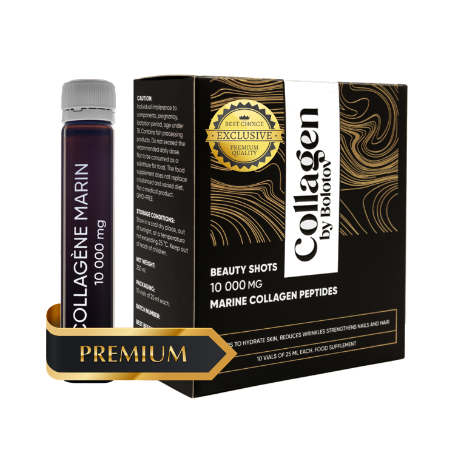
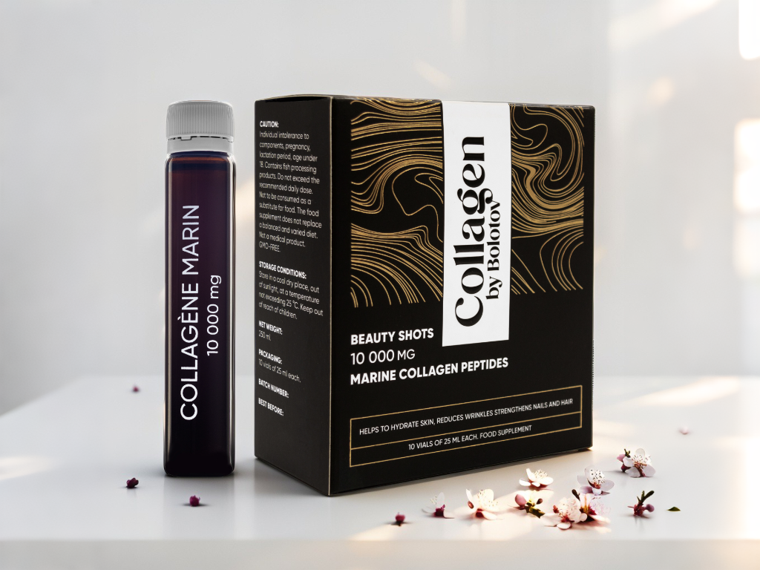
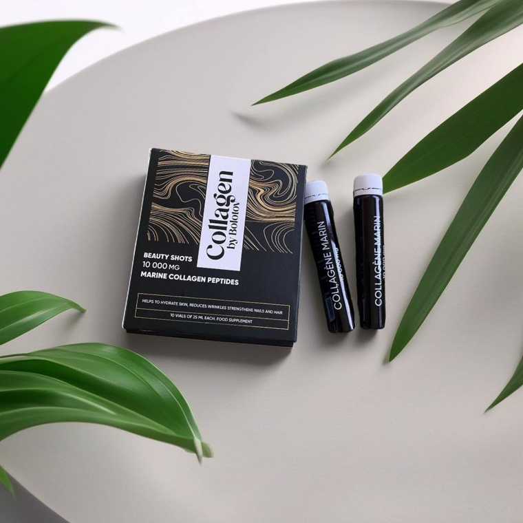
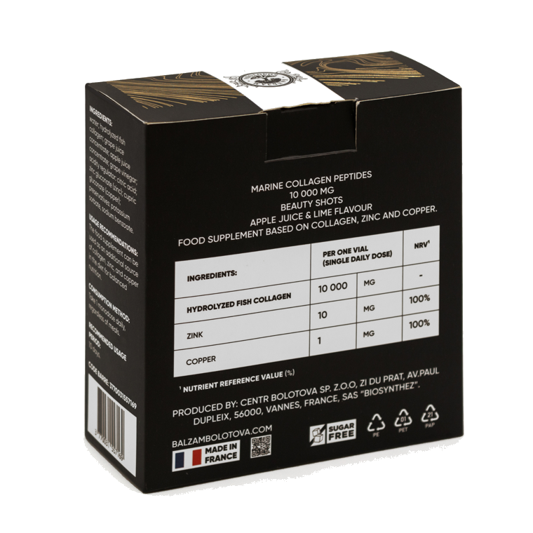

Morskie peptydy kolagenowe w płynie.
Suplement diety na bazie morskiego kolagenu, cynku i miedzi, wyprodukowany na bazie 100% naturalnego soku jabłkowego. Bez dodatku cukru. Produkt w formie płynnej — wygodne buteleczki „beauty shots”.
Płynny suplement diety z hydrolizowanym kolagenem rybim — aż 10 000 mg peptydów kolagenowych w jednej porcji (25 ml), czyli 2–3 razy więcej niż w większości produktów dostępnych na rynku. Morski kolagen pozyskiwany jest z wysokiej jakości surowca rybnego, a dzięki procesowi enzymatycznej hydrolizy peptydy są rozłożone na małe, łatwo przyswajalne cząsteczki.
Formuła wzbogacona jest o cynk i miedź, a jej bazę stanowi 100% naturalny sok jabłkowy i winogronowy. Bez dodatku cukru. Produkt w wygodnej formie płynnej — „beauty shots” w poręcznych buteleczkach 25 ml, o naturalnym smaku limonkowym.
* Dozwolone oświadczenia zdrowotne dotyczące cynku i miedzi (Rozporządzenie (UE) nr 432/2012).
Kolagen by Bolotov to propozycja dla osób, które chcą zadbać o kondycję skóry, włosów i paznokci od wewnątrz i uzupełnić codzienną dietę o morski kolagen z cynkiem i miedzią.
* Oświadczenia dotyczą cynku i miedzi (Rozporządzenie (UE) nr 432/2012).
Indywidualna nietolerancja składników, alergia na ryby, ciąża, okres karmienia piersią, wiek poniżej 18 lat. Przed zastosowaniem skonsultuj się z lekarzem. Suplement diety, nie jest lekiem.
Woda, hydrolizowany kolagen rybi, koncentrat soku winogronowego, koncentrat soku jabłkowego, ocet winogronowy, regulator kwasowości (kwas cytrynowy), naturalny aromat limonkowy, cynk (glukonian cynku), miedź (glukonian miedzi), substancje konserwujące (sorbinian potasu, benzoesan sodu).
| Objętość | 250 ml (10 buteleczek × 25 ml) |
| Hydrolizowany kolagen rybi (w porcji 25 ml) | 10 000 mg |
| Cynk (glukonian cynku) | 15 mg (100% RWS**) |
| Miedź (glukonian miedzi) | 1 mg (100% RWS**) |
** RWS — referencyjna wartość spożycia. Producent: HataVia s.r.o.
Przyjmować 1 buteleczkę (25 ml) dziennie. Przed użyciem wstrząsnąć. Można wypić bezpośrednio lub rozpuścić w wodzie. Najlepsze efekty daje regularne stosowanie przez minimum 30 dni, optymalnie przez 3 kolejne miesiące.
Nie należy przekraczać zalecanej dziennej porcji. Suplement diety nie może być stosowany jako substytut zróżnicowanej diety. Przechowywać w temperaturze do 25°C, w suchym miejscu, z dala od światła słonecznego i w miejscu niedostępnym dla małych dzieci.
Materiały edukacyjne na temat kolagenu. Mają charakter wyłącznie informacyjny.
Materiał przygotowany przez specjalistę ds. żywienia.
Słowo „kolagen” pochodzi od greckiego określenia „klej” — i nie bez powodu. Kolagen to białko budulcowe, które naturalnie występuje w organizmie i stanowi jeden z głównych składników skóry, kości, ścięgien, więzadeł i tkanki łącznej. Wraz z wiekiem jego naturalna produkcja stopniowo się zmniejsza — u kobiet jest to szczególnie odczuwalne po 40. roku życia, gdy spada poziom estrogenów, ale dotyczy to również mężczyzn.
W organizmie człowieka występuje kilkadziesiąt typów kolagenu, ale to trzy z nich — typ I, II i III — stanowią zdecydowaną większość. Typ I to przede wszystkim skóra, kości i ścięgna; typ II występuje głównie w chrząstce; typ III towarzyszy typowi I w skórze i naczyniach. Suplementacja diety kolagenem to po prostu jeden ze sposobów dostarczenia organizmowi budulca w postaci aminokwasów.
Najlepiej przyswajalną formą jest kolagen hydrolizowany, czyli peptydy kolagenowe. W procesie hydrolizy duże cząsteczki białka zostają rozłożone na krótkie łańcuchy aminokwasów, które łatwiej przenikają z przewodu pokarmowego. To sprawia, że hydrolizowany kolagen jest wygodnym sposobem uzupełnienia codziennej diety.
Kolagen morski ma strukturę najbardziej zbliżoną do ludzkiej i — dzięki mniejszym cząsteczkom — jest dobrze przyswajalny. W formule Kolagenu by Bolotov peptydom towarzyszą cynk i miedź: cynk pomaga w utrzymaniu prawidłowego stanu skóry, włosów i paznokci, a miedź — w prawidłowym funkcjonowaniu tkanki łącznej.*
* Dozwolone oświadczenia zdrowotne dotyczące cynku i miedzi (Rozp. (UE) nr 432/2012). Suplement diety nie jest lekiem.
Materiał przygotowany przez specjalistę ds. żywienia.
Kolagen by Bolotov to morski, płynny kolagen peptydowy, wyprodukowany z wysokiej jakości surowca pochodzącego z czystych wód Atlantyku. Peptydy kolagenowe to niewielkie, rozpuszczalne cząsteczki białka poddane enzymatycznej hydrolizie — dzięki temu procesowi są łatwiej przyswajalne niż duże cząsteczki kolagenu.
Co wyróżnia ten produkt? Przede wszystkim wysoka porcja — 10 000 mg peptydów kolagenowych w jednej porcji, czyli 2–3 razy więcej niż w większości produktów na rynku. Formuła jest wygodna w stosowaniu: płynne „beauty shots” można wypić bezpośrednio lub dodać do ulubionego napoju. Produkt jest też odpowiedni dla osób na diecie pescetariańskiej.
Obecność miedzi i cynku uzupełnia kompozycję: cynk pomaga chronić komórki przed stresem oksydacyjnym i utrzymać prawidłowy stan skóry, włosów i paznokci, a miedź wspiera prawidłowe funkcjonowanie tkanki łącznej oraz prawidłową pigmentację skóry i włosów.*
Forma płynna ma jeszcze jedną zaletę — łatwo wpisuje się w codzienną rutynę. Buteleczkę 25 ml można wypić od razu albo dodać do wody czy ulubionego napoju, bez mieszania i przygotowywania. Naturalny smak limonkowo-jabłkowy sprawia, że dbanie o siebie staje się prostym, przyjemnym nawykiem — rano lub wieczorem, zależnie od tego, co bardziej Ci pasuje.
* Oświadczenia dotyczą cynku i miedzi (Rozp. (UE) nr 432/2012). Suplement diety nie zastępuje zróżnicowanej diety.
Materiał przygotowany przez specjalistę ds. żywienia.
Na rynku jest dziś mnóstwo produktów kolagenowych i łatwo się w nich pogubić. Poniżej kilka praktycznych wskazówek, na co zwrócić uwagę przy wyborze.
1. Postaw na peptydy. Najłatwiej przyswajalny jest kolagen hydrolizowany — peptydy o niskiej masie cząsteczkowej, gotowe do wykorzystania przez organizm.
2. Sprawdź pochodzenie surowca. Jakość kolagenu zależy od surowca. Warto zwrócić uwagę, skąd pochodzi i w jakich warunkach został wyprodukowany. Kolagen morski z ryb poławianych w czystych wodach to wysokiej jakości surowiec.
3. Zwróć uwagę na formę. Forma płynna jest gotowa do użycia — nie wymaga mieszania ani przygotowywania.
4. Morski czy wołowy? Kolagen morski ma strukturę najbardziej zbliżoną do ludzkiej i jest dobrze przyswajalny. Tzw. „kolagen wegański” to w rzeczywistości jedynie mieszanka aminokwasów, a nie kolagen.
5. Porcja. Wybieraj produkty o wysokiej zawartości — co najmniej 10 000 mg na porcję.
6. Skład. Im czystszy skład, tym lepiej. Dobrze, gdy obecne są składniki wspierające — cynk i miedź, które pomagają chronić komórki przed stresem oksydacyjnym.*
Kolagen by Bolotov spełnia te kryteria: wysoka porcja hydrolizowanego kolagenu morskiego (10 000 mg) w wygodnej formie płynnej, z dodatkiem cynku i miedzi oraz naturalnym smakiem limonkowo-jabłkowym.
* Oświadczenia dotyczą cynku i miedzi (Rozp. (UE) nr 432/2012). Materiał ma charakter informacyjny; suplement diety nie jest lekiem.